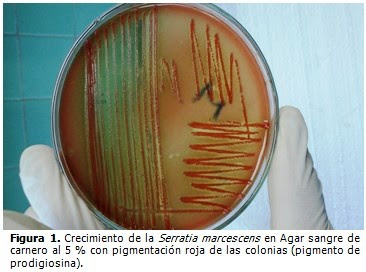

Serratia Marcenses
La mortalidad por este agente oscila entre 25% y 32%.
Bacilos gramnegativos
La Serratia son bacilos gramnegativos que pueden formar parte de la microbiota humana a nivel intestinal, pertenece al grupo de entero bacterias. Los miembros de éste género producen un pigmento rojo, caracteristico la prodigiosina por lo que diferencian de los miembros de la familia de entero bacterias. Suelen formar Biofilms o biocapas qué son estructuras de microorganismos que se adhieren a superficies vivas o inertes, lo que permite que persista aún en condiciones desfavorables durante días, incluso meses..leer mas sobre bacteria...
Hábitat
Tiene afinidad por lugares húmedos. Se encuentran en paredes, suelos, grifo del lavado de manos, tuberías, equipos instrumentales, equipos de ventilación mecánica. Soluciones de antisépticos o desinfectantes, jabones de manos, en champú de bebés. Además pueden encontrarse colonizado el tracto gastrointestinal y la piel del personal de salud. Las informaciones recogidas en la literatura científica sobre productos antisépticos infectados por contaminación microbiologica, son motivo de preocupación para el control de infecciones nosocomiales. La contaminación de los antisépticos como la clorexidina puede ser de forma intrínseca sucede durante el proceso de fabricación o extrinseca al diluir el producto con agua del tubo y no con agua estéril.
Errores frecuentes
- Uso de soluciones sobre-diluidas.
- Uso de productos obsoletos.
- Uso de agua de grifo para diluir.
- Sección inadecuada de un producto.
- Llenado de envases mas pequeños a partir de uno de gran volumen. Los envases deben de gastarse en su totalidad, lavar con agua estéril y dejar secar.
Recomendaciones

- Usar solo antisépticos o desinfectantes a la solución de uso recomendado por los proveedores.
- Usar solo agua estéril para diluir los productos, contraindicado el uso de agua de grifo.
- Usar los productos con respecto a los tiempos recomendados.
- Nunca utilizar productos etiquetados como antisépticos para desinfectantes.
- Preparar un producto desinfectante o antiséptico siguiendo las recomendaciones para prevenir la contaminación intrínseca.
- Asegurar el suministro continuo de insumos para la prevención y el control de infecciones.
- Limpieza y desinfección de los áreas más tocadas con solución clorada al 0.5% una vez por turno.
- Utilizar el debido equipo de protección para ingresar a la habitación y depositarla en una caja antes de salir de la habitación.
- Higiene de manos antes de salir de la habitación (agua y solución antiséptico o Alcohol)
- Extremar técnica aséptica en el momento de aspiración de las secreciones.
Durante el brote
- Seguir con la vigilancia activa
- Extremar higiene de manos, cumplir con los 5 momentos del lavado de manos.5 momentos del lavado de manos...
- Manejo adecuado de soluciones parenterales.